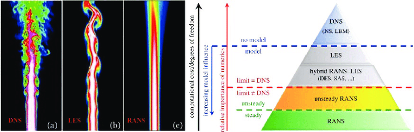

CFD
Principy modelování
CFD = Computational Fluid Dynamics
řešení diferenciálních rovnic (ZZ hmoty - rovnice kontinuity, hybnosti - Navier-Stokesovy rovnice, energie)
Obecně výpočet probíhá ve 2 krocích:
Diskretizace definičního oboru (\(\vec{x}, t\))
různé metody (FVM, FEM, …)
Iterační řešení systému algebraických rovnic
Postup
Pre-processing
definice geometrie
generace výpočetní sítě (mesh) - prostorová, časová
volba modelů (turbulence, fyzikální a chemické procesy,…)
záleží na požadované přesnosti (a dostupném hardwaru)
další faktory - počt fází, přenos energie,…
termofyzikální vlastnosti materiálů (hustota, viskozita,…)
zadané jako konstanty, tabulka hodnot nebo funkce
hraniční (popř. i počáteční) podmínky
vstup, výstup, stěny,…
v případě nestacionárních úloh se často používá řešení stacionární úlohy jako počáteční podmínka
Výpočet
nejsnažší část - pracuje počítač
vyplatí se sledovat konvergenci – např. zkontrolovat, že residua klesají
Post-processing
kontrola, že výsledky dávají smysl
analýza konvergence
zkontrolovat, že další iterace už nemění výsledek
ověřit vliv sítě (meshe) na výsledek
provést výpočet na jemnějším meshi a porovnat výsledky
zpracování výsledků do požadovaného formátu
Chyby
Numerické
Diskretizační
Souvisí s náhradou derivace diferenčním schématem:
\[\begin{split}\frac{\partial u}{\partial x} &\approx \frac{u(x+h) - u(x)}{h} + \mathcal{O}(h) \\ \frac{\partial u}{\partial x} &\approx \frac{u(x) - u(x-h)}{h} + \mathcal{O}(h) \\ \frac{\partial u}{\partial x} &\approx \frac{u(x+0.5h) - u(x-0.5h)}{h} + \mathcal{O}(h^2)\end{split}\]Odhad velikosti diskretizační chyby – porovnat výpočty na různých sítích.
Zaokrouhlovací
Souvisí s reprezentací reálných čísel v počítači (
float,double).Diskretizační a zaokrouhlovací chyby jdou proti sobě:
snížení diskretizační chyby vede k většímu počtu výpočtů, což může vést k větší zaokrouhlovací chybě (záleží však na typu úlohy, stabilitě schématu,…)
Chyba konvergence
výpočet různých veličin (rychlosti, teploty,…) konverguje různě rychle
pro kontrolu stačí sledovat např. velikost residua v závislosti na iteraci
souvisí s iteračním schématem (typem a hyperparametry) pro řešení maticové úlohy
Chyba diskretizace fyzikálního modelu
souvisí se zadáním a modelovacími chybami
TODO
Modelovací
Příliš zjednodušená geometrie
např. špatné použití symetrie nebo zanedbání malé oblasti
Fyzikální modely
souvisí s modelováním fyzikálních procesů
např. volba modelu turbulence
RANS je rychlé, ale dělá značná zjednodušení
LES řeší některé struktury v proudění, malé struktury pak modeluje; více náročné na HW než RANS, méně než LES
DNS řeší přímo Navier-Stokesovy rovnice, ale je vysoce náročné na HW

Vlevo: Srovnání DNS (a), LES (b) a RANS (c) simulace proudění z trysky (Italian Agency For New Energy Technologies 2006). Vpravo: Schematické znázornění rozdílu mezi RANS, LES and DNS modelováním (Deck et al. 2014). Převzato z ResearchGate, příspěvek uživatele Alwin Hopf, přeloženo. Originál viz https://www.researchgate.net/figure/Left-Comparison-of-a-DNS-a-LES-b-and-RANS-c-simulation-of-a-jet-flow-Italian_fig1_330765625
stlačitelnost tekutin – často se aproximují jako nestlačitelné - ale to není použitelné vždy
potřeba předem odhadnout, co je použitelné (např. \(v \ll c\), kde \(c\) je rychlost zvuku, pak aproximace nestlačitelné tekutiny lze použít)
Termofyzikální vlastnosti
často aproximujeme konstantami, ale někdy je potřeba poskytnout závislost \(x(\rho)\) nebo \(x(T)\)
např. přirozená konvekce
Hraniční podmínky
Počáteční podmínky
Uživatelské funkce
Fázové přechody
Tvorba geometrie
2 možnosti:
Import modelu z CAD (např.
stlformát)
často zdroj chyb – model se nenaimportuje správně,…
Vlastní SW pro tvorbu geometrie v CFD programu
Odstraňuje problém s importem
Modelovací prostředí nemusí nabízet funkcionalitu jako samostatný CAD software
2 přístupy k implementaci
centrální - 1 prostředí, kde se pracuje pořád (např. Geostar)
samostatné moduly - typické u velkých balíků (např. Ansys)
Přístupy ke geometrii
CLI (command line interface) + náhled
expert-friendly
myš + ikony
od nejmenších modelů - křivky -> plochy -> objemy - nejdřív geometrie, pak síť
od sítě - deformace apod. - typické pro starší SW
Diskretizace geometrie
v CFD může mít velký vliv na výsledek (v pevnostních výpočtech spíš menší)
Prvky
dle dimenzionality:
1D
úsečka / křivka
obsahuje >= 2 nody (2 - úsečka, 3 - quadratic curve, 4 - cubic curve)
2D
trojúhelníky (>= 3 nody), čtyřhrany (>= 4 nody)
strana může být křivá (pak potřebuje > 2 nody)
3D
hexahedron - 6 stěn, >= 8 nodů, nemusí být pravoúhlý
hranol (prism)
pyramid
tetrahedron
dodecahedron
polyhedra - libovolný tvar (mnohostěn)
Požadavky na síť
pokrýt celý objem
prvky se nesmí překrývat
výjimka - síť typu „chiméra“ - překryv je úmyslný
Typy sítí
Strukturované = pravidelné
typ H - každý nód obklopen stejným množstvím prvků
typ O - okolo kruhových těles - radiální
typ C - kulaté + ostrý bod - např. křídla
obecně jednodušší na výpočet - vede na řešení úlohy s pásovou maticí
Nestrukturované = nepravidelné
složitější (horší indexování kvůli nepravidelnostem) -> náročnější
dnes preferováno – dává elementy tam, kde je potřeba lepší rozlišení (oblasti s ostrými gradienty)
při použití několika různých sítí je potřeba řešit napojení
konformní - sítě se napojují
nekonformní - nody nesousedí
rozhraní 2 sítí může být zdrojem chyb
Speciální
rotující mříže – pro čerpadla a jiné pohyblivé části
dynamické – pohybuje se
dynamic refinement – zhušťuje se podle potřeby
problém – jak správně zvolit kritérium pro zhuštění
použití např. pro dvoufázové proudění – zjemnění sítě poblíž fázového rozhraní
Posuzování kvality sítě
hustota sítě
balancování HW náročnosti proti přesnosti
doporučuje se provést výpočet na 2 různě hustých sítích a sledovat konvergenci hodnot
parametry prvků
poměr stran - optimálně blízko 1 (tj. prvky nejsou příliš roztáhnuté v 1 dimenzi - výjimka - prismatické prvky pro rozlišení mezní vrstvy
šikmost (skewness) - zkosení
ortogonalita